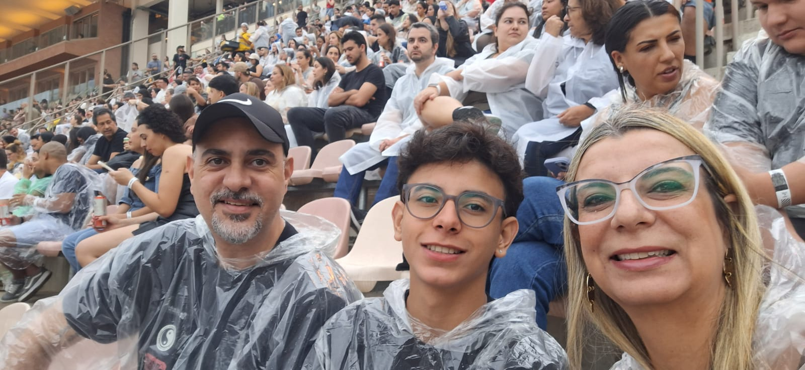

Olá, eu sou
Murilo
Sonhe • Aprenda • Conquiste
Olá! Eu sou o Murilo, uma pessoa paciente, organizada e sou fascinado por aprender coisas novas.

Sobre mim
Sou uma pessoa paciente, organizada, disciplinada e sempre apta a aprender coisas novas. Penso muito no meu futuro, no que desejo ser e como devo ser para chegar lá.
Gosto de desafios para desenvolver meu foco e minha capacidade. Sei regular quando ser extrovertido e reservado, e gosto de conhecer pessoas novas e saber como elas veem as coisas de forma diferente de mim.
- Idade
- 16 anos
- Moro
- São Paulo - SP
- Nacionalidade
- Brasileira

Meus pais e eu
- Mãe: Elissandra
- Pai: Alberto

Hobbies
-
 Jogar video game
Jogar video game
- Fazer esportes
- Ver filmes e séries
- Ouvir músicas
Curiosidades
- Tenho duas gatas: a Cacau e a Ravena
- Fiz aula de teclado por um ano
- Sou Corinthiano
- Fazia taekwondo - faixa vermelha-preta
- Jogava futsal
- Já joguei duas Ligas Escolares no Instituto


Lugares que já fui e que quero conhecer
🌍 Já fui
-
Santiago - Chile

- Wikipédia: Conheça sobre
- Galeria: Veja imagens de Santiago
- Google Earth: Se quiser explorar um pouco mais
-
Buenos Aires - Argentina
- Wikipédia: Conheça sobre
- Galeria: Veja imagens de Buenos Aires
- Google Earth: Se quiser explorar um pouco mais
-
Porto Seguro - Brasil
- Wikipédia: Conheça sobre
- Galeria: Veja imagens de Porto Seguro
- Google Earth: Se quiser explorar um pouco mais
-
Maceió - Brasil

- Wikipédia: Conheça sobre
- Galeria: Veja imagens de Maceió
- Google Earth: Se quiser explorar um pouco mais
📍🗺️ Quero conhecer
-
Nova York - Estados Unidos
- Wikipédia: Conheça sobre
- Galeria: Veja imagens de Nova York
- Google Earth: Se quiser explorar um pouco mais
-
Paris - França

- Wikipédia: Conheça sobre
- Galeria: Veja imagens de Paris
- Google Earth: Se quiser explorar um pouco mais
-
Chongqing - China

- Wikipédia: Conheça sobre
- Galeria: Veja imagens de Chongqing
- Google Earth: Se quiser explorar um pouco mais
-
Madrid - Espanha

- Wikipédia: Conheça sobre
- Galeria: Veja imagens de Madrid
- Google Earth: Se quiser explorar um pouco mais
Momentos que gostaria de reviver
-
Forma 9

-
Viagem de Buenos Aires

-
Infância